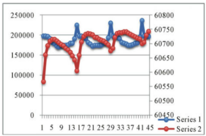
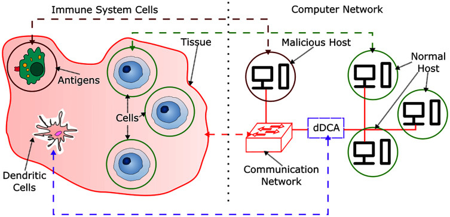
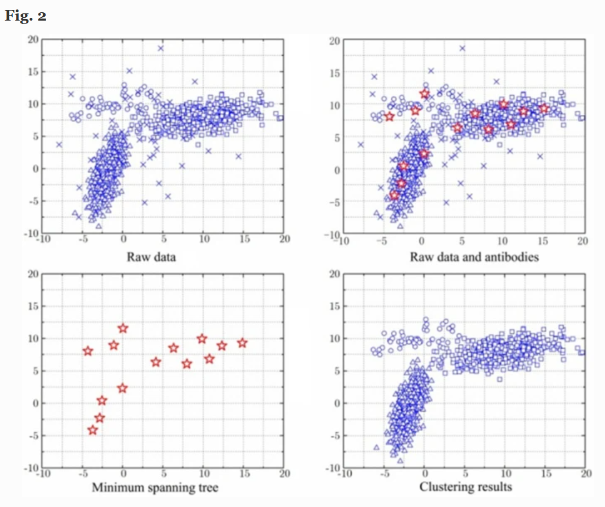

INTRODUCTION:
Artificial Immune Systems (AIS) are computational models inspired by the human immune system’s ability to detect and respond to pathogens. AIS algorithms have been effectively applied in various domains, including cybersecurity, anomaly detection, and data clustering.
INTRUSION DETECTION
AIS-based Intrusion Detection Systems (IDS) leverage the immune system’s self/non-self discrimination to identify unauthorized access or anomalies in network traffic. Techniques like the Negative Selection Algorithm (NSA) enable the detection of novel threats without prior knowledge of attack patterns.
CASE STUDY
A study by Shen et al. (2012) implemented an AIS-based IDS using Rough Set theory, achieving improved detection accuracy on the KDD CUP 99 dataset.
READ MOREPARAMETER SENSITIVITY IN AIS-BASED INTRUSION DETECTION (SHEN ET AL.)

This graph from Shen et al. (2012) shows how different parameter weights impact the detection accuracy of an AIS-based intrusion detection system. By emulating the immune system’s self/non-self discrimination, this approach uses rough set theory to improve parameter selection, significantly enhancing true negative rates while maintaining high true positive rates.
ANOMALY DETECTION
AIS algorithms are adept at identifying anomalies by modeling normal behavior and detecting deviations. The Dendritic Cell Algorithm (DCA), inspired by the Danger Theory, processes multiple signals to detect anomalies in real-time.
CASE STUDY
Greensmith et al. (2010) applied the DCA for real-time anomaly detection, demonstrating its effectiveness in identifying port scans.
READ MOREDCA: BRIDGING THE IMMUNE SYSTEM AND ANOMALY DETECTION IN NETWORKS

This infographic highlights the parallels between the immune system’s ability to identify antigens using dendritic cells and how the Dendritic Cell Algorithm (DCA) models normal and abnormal network behaviors. Just as mutation and selection help the immune system refine its defense, DCA processes multiple signals to detect deviations in real-time. The approach, validated by Greensmith et al. (2010), demonstrates how AIS principles can identify port scans and other anomalies in computer networks.
DATA CLUSTERING
AIS approaches to data clustering, such as the Artificial Immune Network (aiNet), utilize immune network theories to cluster data without prior knowledge of the number of clusters. These methods are particularly useful in unsupervised learning scenarios.
CASE STUDY
Deng et al. (2020) proposed an artificial immune network clustering algorithm based on a cultural algorithm, enhancing clustering performance in wireless communications.
READ MORECAINET: INTEGRATING IMMUNE AND CULTURAL ALGORITHMS FOR ENHANCED DATA CLUSTERING

Figure 2 from Deng et al. (2020) illustrates how the Cultural Artificial Immune Network (CaiNet) algorithm groups similar data points together. Just like the immune system recognizes patterns and adapts to new threats, this approach helps find natural groupings in data without knowing how many groups there are beforehand.